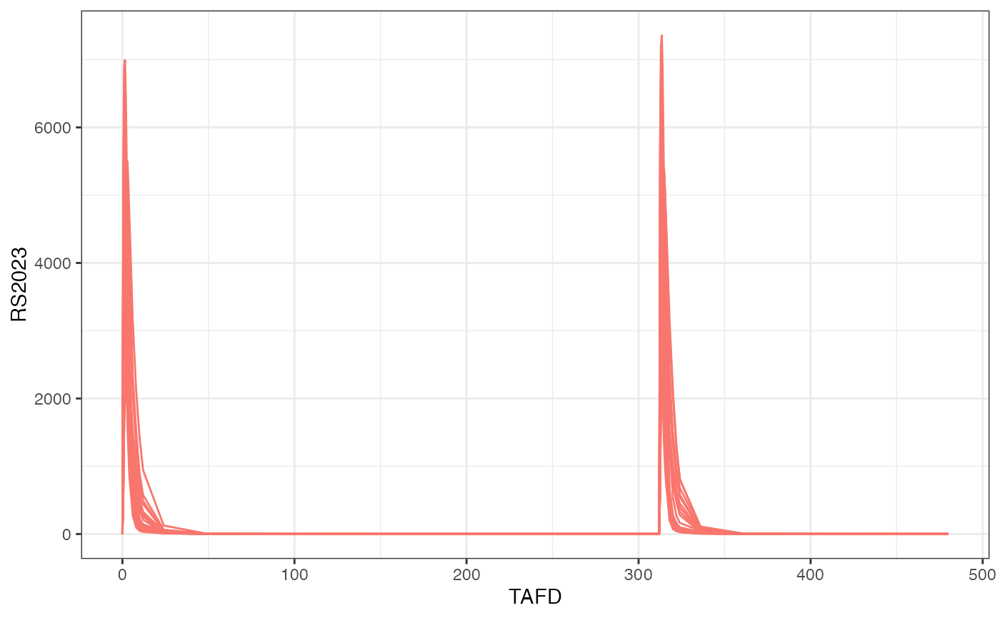
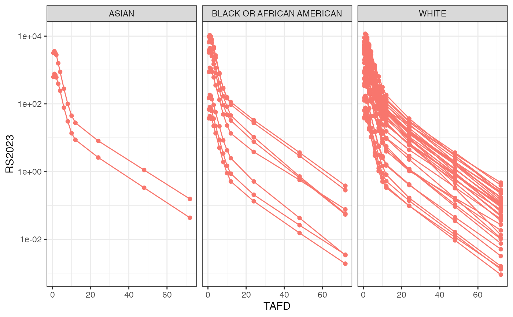
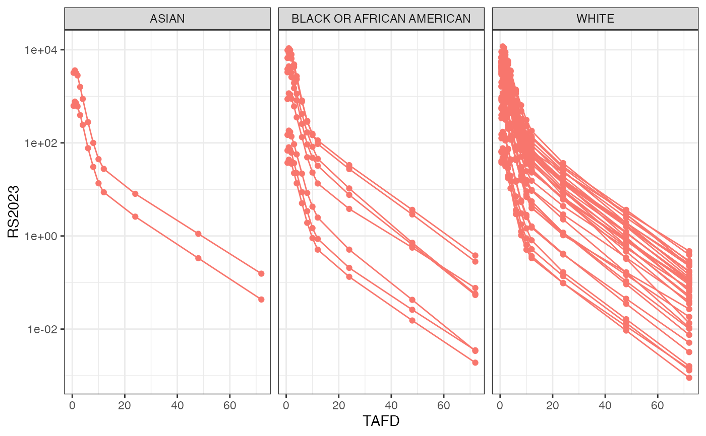
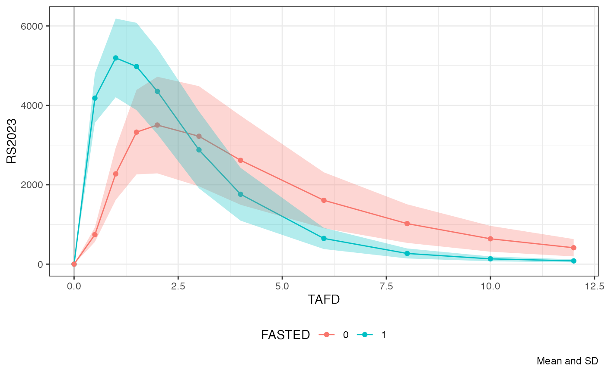
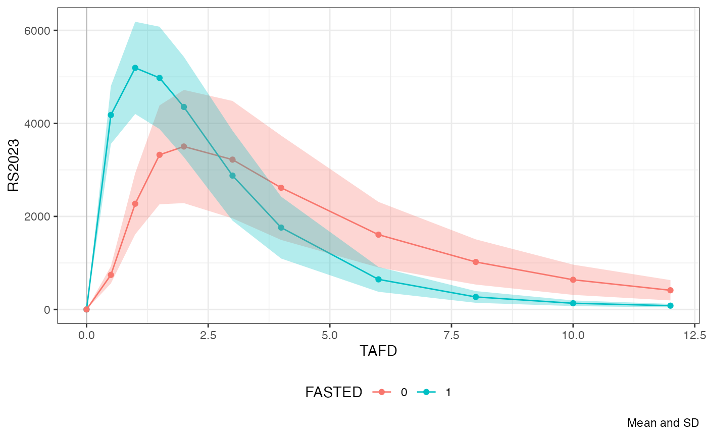

Plot NIF object.
Usage
# S3 method for class 'nif'
plot(
x,
analyte = NULL,
dose = NULL,
time = "TAFD",
color = NULL,
facet = "DOSE",
min_time = NULL,
max_time = NULL,
cfb = FALSE,
dose_norm = FALSE,
admin = NULL,
points = FALSE,
lines = TRUE,
log = FALSE,
mean = FALSE,
title = NULL,
legend = TRUE,
size = 1.5,
scales = "fixed",
alpha = 1,
caption = NULL,
ribbon = TRUE,
group = deprecated(),
...
)Arguments
- x
The NIF object to be plotted.
- analyte
The analyte(s) to be plotted, as character.
- dose
The dose(s) to be filtered for.
- time
The time field to be plotted on the x-axis. Can be any of 'TIME', 'NTIME', 'TAFD' or 'TAD'.
- color
The column(s) to be used for coloring.
- facet
The column(s) to be used for faceting.
- min_time
The minimal time in units of the selected time field, as numeric.
- max_time
The minimal time in units of the selected time field, as numeric.
- cfb
Plot change from baseline, as logical.
- dose_norm
Dose-normalized values, as logical.
- admin
The analyte to be plotted as administration markers, as character.
- points
Plot points, as logical.
- lines
Plot lines, as logical.
- log
Logarithmic y axis, as logical.
- mean
Plot means, as logical.
- title
The plot title, as character.
- legend
Show the plot legend, as logical.
- size
The
sizeparameter toggplot2::geom_point()as numeric.- scales
The
scalesparameter toggplot2::facet_wrap(), can be "fixed" (default), "free", "free_x" or "free_y".- alpha
The
alphaparameter toggplot2::geom_point(), as numeric.- caption
The caption line as per
ggplot2::labs().- ribbon
Plot ribbon in mean plot, as logical.
- group
![[Deprecated]](figures/lifecycle-deprecated.svg) Grouping variable. Use the
Grouping variable. Use the
colororfacetparameters instead.- ...
Further parameters.
Examples
plot(examplinib_fe_nif)

plot(examplinib_fe_nif, facet = "FASTED", time = "TAD")
 plot(examplinib_fe_nif, color = "FASTED", time = "TAD", facet = "SEX")
plot(examplinib_fe_nif, color = "FASTED", time = "TAD", facet = "SEX")
 plot(examplinib_sad_nif,
mean = FALSE, points = TRUE, dose_norm = FALSE,
facet = "RACE", log = TRUE, max_time = 72
)

plot(examplinib_sad_nif, dose_norm = TRUE, facet = NULL, log = TRUE,
max_time = 48, points = TRUE)
plot(examplinib_sad_nif,
mean = FALSE, points = TRUE, dose_norm = FALSE,
facet = "RACE", log = TRUE, max_time = 72
)

plot(examplinib_sad_nif, dose_norm = TRUE, facet = NULL, log = TRUE,
max_time = 48, points = TRUE)
 plot(examplinib_fe_nif,
points = TRUE, color = c("FASTED"), mean = TRUE,
max_time = 12, admin = "RS2023"
)

plot(examplinib_poc_nif,
points = TRUE, dose_norm = TRUE, facet = NULL,
color = "SEX", max_time = 25, time = "TAD", lines = FALSE, size = 3,
alpha = 0.5, title = "POC study: all analytes and doses"
)
plot(examplinib_fe_nif,
points = TRUE, color = c("FASTED"), mean = TRUE,
max_time = 12, admin = "RS2023"
)

plot(examplinib_poc_nif,
points = TRUE, dose_norm = TRUE, facet = NULL,
color = "SEX", max_time = 25, time = "TAD", lines = FALSE, size = 3,
alpha = 0.5, title = "POC study: all analytes and doses"
)
 plot(examplinib_fe_nif,
points = TRUE, color = c("FASTED"), mean = TRUE,
max_time = 12, admin = "RS2023"
)
plot(examplinib_fe_nif,
points = TRUE, color = c("FASTED"), mean = TRUE,
max_time = 12, admin = "RS2023"
)